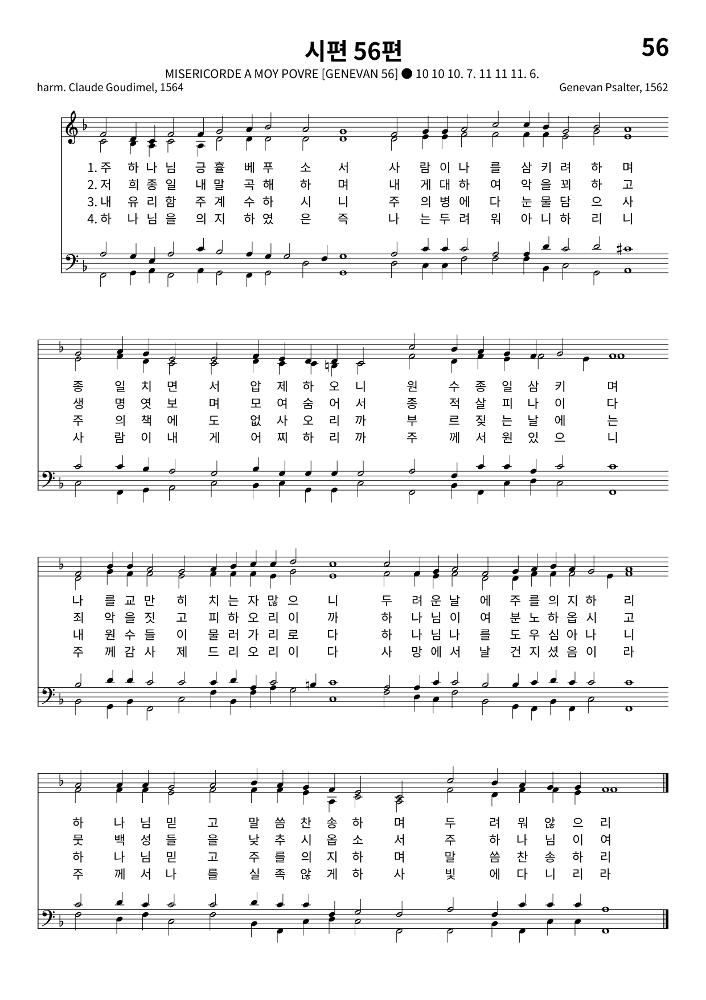

Psalm 56
MISERICORDE A MOY POVRE [GENEVAN 56] · 10 10 10. 7. 11 11 11. 6.
English title: Be Gracious, O My God, to Whom I Flee
Tune: Genevan Psalter, 1562 · Harmony: Claude Goudimel, 1564 · Lyrics: Korean adaptation of Psalm 56 from the Korean Revised Version (AI draft adaptation · not yet theologically reviewed) · 4 stanzas
Score PDF MusicXML (for printing) MusicXML (for accompaniment, with prelude and repeats) Read Psalm 56 (Korean Revised Version)
Score
← Psalm 55B ListAccompaniment (in preparation)Psalm 57 →
Lyrics (Korean)
Stanza 1 (Ps. 1~4절)
주 하나님 긍휼 베푸소서
사람이 나를 삼키려 하며
종일 치면서 압제하오니
원수 종일 삼키며
나를 교만히 치는 자 많으니
두려운 날에 주를 의지하리
하나님 믿고 말씀 찬송하며
두려워 않으리
주 하나님 긍휼 베푸소서
사람이 나를 삼키려 하며
종일 치면서 압제하오니
원수 종일 삼키며
나를 교만히 치는 자 많으니
두려운 날에 주를 의지하리
하나님 믿고 말씀 찬송하며
두려워 않으리
Stanza 2 (Ps. 5~7절)
저희 종일 내 말 곡해하며
내게 대하여 악을 꾀하고
생명 엿보며 모여 숨어서
종적 살피나이다
죄악을 짓고 피하오리이까
하나님이여 분노하옵시고
뭇 백성들을 낮추시옵소서
주 하나님이여
저희 종일 내 말 곡해하며
내게 대하여 악을 꾀하고
생명 엿보며 모여 숨어서
종적 살피나이다
죄악을 짓고 피하오리이까
하나님이여 분노하옵시고
뭇 백성들을 낮추시옵소서
주 하나님이여
Stanza 3 (Ps. 8~10절)
내 유리함 주 계수하시니
주의 병에다 눈물 담으사
주의 책에도 없사오리까
부르짖는 날에는
내 원수들이 물러가리로다
하나님 나를 도우심 아나니
하나님 믿고 주를 의지하며
말씀 찬송하리
내 유리함 주 계수하시니
주의 병에다 눈물 담으사
주의 책에도 없사오리까
부르짖는 날에는
내 원수들이 물러가리로다
하나님 나를 도우심 아나니
하나님 믿고 주를 의지하며
말씀 찬송하리
Stanza 4 (Ps. 11~13절)
하나님을 의지하였은즉
나는 두려워 아니하리니
사람이 내게 어찌하리까
주께 서원 있으니
주께 감사제 드리오리이다
사망에서 날 건지셨음이라
주께서 나를 실족 않게 하사
빛에 다니리라
하나님을 의지하였은즉
나는 두려워 아니하리니
사람이 내게 어찌하리까
주께 서원 있으니
주께 감사제 드리오리이다
사망에서 날 건지셨음이라
주께서 나를 실족 않게 하사
빛에 다니리라